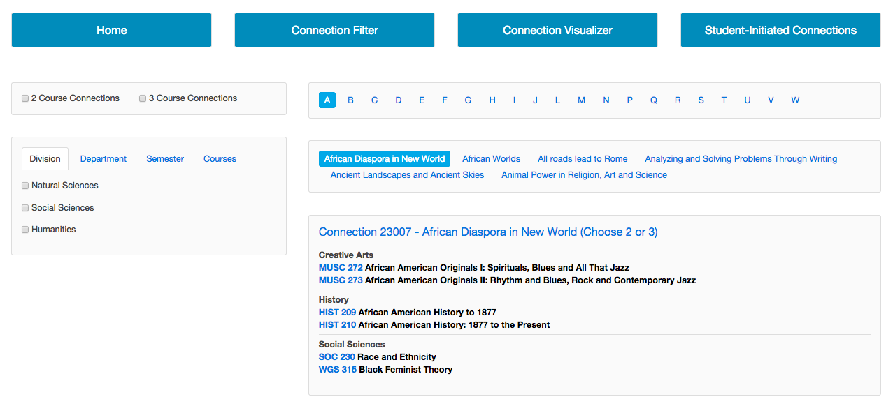
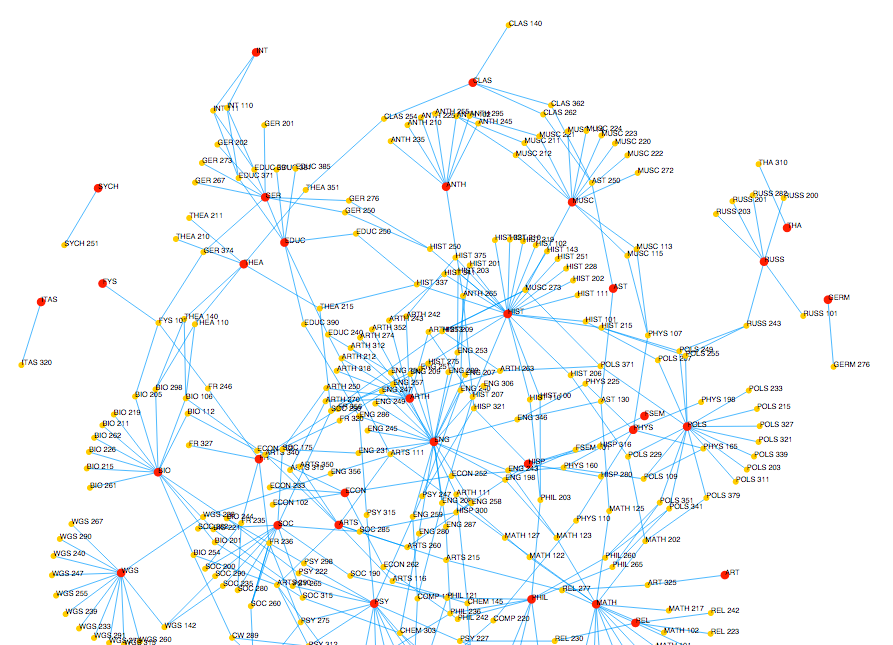
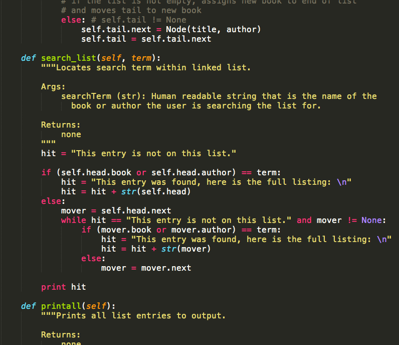
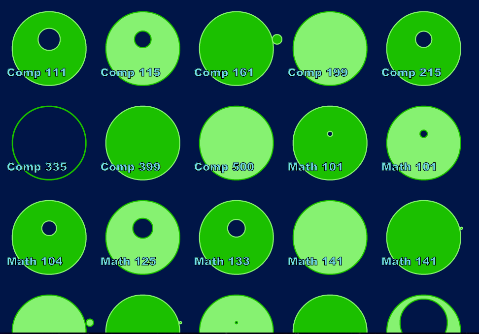

Wheaton Connections (HW #11)
I am working with Sara on creating a new way for looking at the Wheaton Connection options for students attending Wheaton College. When looking at the complete list of available connections on the Wheaton website, it's not possible to sort them according to any kind of criteria. We hope to change that with our project, which will allow a student to sort the connections by division, department, semester offered, etc.
We also added a force-directed svg graph that provides a visual way to see which courses are connected to one-another. You can move the points and see the graph respond directly, and because it's an svg graph, the course titles are searchable using the basic CNTL/CMD + F find feature. This graph gets its data from regex searches in python which generate the proper necessary JSON. It is built using HTML, javascript, and the D3.js library.
When working on this, we used issues in Github to break down the different goals we had(ve) for the project, as well as report bugs so that we could get help from each other on problems we were having. It provided a good place to see what progress was being made, and still needed to be made.
Linked List (HW #1/#2)
Using python, I implemented code that would allow the user to created a linked list. The code allows for various features, such as adding a node, searching the list for a particular matching value, and populating the linked list with data from a .csv file.

In the second homework assignment for the course, I went back and properly commented and structured my code, according to Google's Python Style Guide.
Course SVG (HW #9)
Using SVGs in HTML, I made a graphical representation of the class occupancy in each math and computer science course from the fall 2014 semester at Wheaton College. In addition, specific effort was put towards making the visual accessible for a variety of people: a sharp contrast in colors is used, there is no loss of information when you zoom in drastically, and the visual information is listed in text portions of each SVG element (i.e., software can read this aloud).
